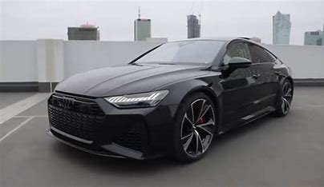

|  | Cool CarsCars have have been an improved method of transportation since the 90's |

A performance-focused version called the Audi SQ8 was launched in June 2019 with chassis revisions, and styling and technology upgrades. It features a new 4.0-litre Biturbo V8 mild-hybrid diesel engine with 429bhp and 900 N⋅m (664 lb⋅ft) of torque. Performance is sent through the 8-speed Tiptronic automatic gearbox to its quattro all-wheel drive system. Euro-spec models have a claimed acceleration of 0–100 km/h (62 mph) in 4.8 seconds (0–60 mph (97 km/h) in 4.6 seconds) with an electronically limited top speed of 249 km/h (155 mph). The new turbochargers are situated within the “V” of the engine block, which Audi claims creates better engine response. To further reduce the effects of turbo lag, the engine features sequential turbocharging, with only a small charger active at low engine speeds and a larger charger engaging above 2,200rpm. An electric-powered compressor assists the turbocharger when starting and accelerating from lower speeds, compensating for the turbo's lack of boost at low revs by adding extra pressure to the intake to smooths out power delivery. The compressor is also fed by the same 48V lithium-ion battery pack which supports the SQ8's mild-hybrid system. Comprising a belt-driven alternator starter and regenerative brake system, it can power the SQ8 at speeds of up to 23 km/h (14 mph) and recover up to 8kW of energy under deceleration. The SQ8 comes with adaptive air suspension and Drive Select dynamic handling system as standards. Advanced suspension package is available as an optional extra, adding four-wheel steering, sport differential and electromechanical active anti-roll bars. Styling differences include 21-inch alloy wheels, a revised, more aggressive bodykit, new rear diffuser with oval exhaust tips as standard. Larger 22-inch alloys, Matrix LED headlights, red brake calipers and carbon-ceramic brakes are available as optional extras. The interior features leather and Alcantara-trimmed sports seats, stainless steel pedals, digital instrument cluster and center-mounted screens which control infotainment, heating and air conditioning systems. Voice control, Wi-Fi hotspot and Amazon Alexa, Android Auto and Apple CarPlay support are standard. Safety technology includes adaptive cruise control, traffic jam assist, active lane assist and a 360-degree camera. It includes a maneuvering assist system which Audi claims to help soften low-speed parking collisions by applying small steering and braking corrections along with a curb warning system which helps prevent damage to the alloys.For more info on the car,Clik on the link below ⬇⬇⬇
Audi SQ8

The Range Rover Velar ushers in a new design language for Land Rover that is influenced by Land Rover's previous design language that began with the Evoque and most recently was used in the Range Rover Sport. The new design language features smoother lines on the body, and emphasises sportiness and on-road ability, but more important is the new interior design language that begins with the Velar, which will later spread to other Range Rover models. The interior of the Velar is influenced by that of the I-Pace of 2018 and features 3 touchscreens, which control most of the interior features of the Velar. The cockpit of the Velar is more driver-focused[weasel words] and the seating position is lower than any other Land Rover before, as sportiness and on-road performance are top prioritiesFor more info on the car,Click on the link below⬇⬇⬇
Range Rover Velar

It's about the size of a tiny house and 10 times as expensive, but the 2022 Rolls-Royce Phantom justifies its price tag with the most luxurious cabin in autodom and the exclusivity that's built into a half-million-dollar car. The outside may cast a familiar decades-old silhouette, but the Phantom's interior is packed with modern conveniences and high-tech features to accompany its truly sumptuous environs. A V-12 engine provides seemingly endless power, yet it purrs silently under the Phantom's long hood so as not to disturb the interior's restful ambience. Fine leathers, real wood, and genuine metal parts cover every square inch of the cabin, and those relegated to the rear seat can relax in utmost comfort, especially in the long-wheelbase Extended model.Prodigious power is provided by a silken 563-hp twin-turbo V-12 paired with an eight-speed automatic and rear-wheel drive. Acceleration is brisk, but Rolls-Royce's claimed 5.1-second zero-to-60-mph time isn't anything you'd appreciate your chauffer trying to replicate. The Phantom is better suited for wafting along with delicate inputs to throttle and steering. To say that the ride is smooth would be an understatement—imagine being carried along on a fluffy cloud. The Phantom practically levitates over the road; it features a pothole-spotting camera that helps the suspension adapt to road imperfections in real time. It's a library-quiet, sensory-deprivation cocoon that makes you feel like part of the royal family.
For more enquiries,click on the link below⬇⬇⬇
Rolls Royce Phantom
| Picanto | ⭐ |
| Corolla S | ⭐⭐ |
| Accord | ⭐⭐⭐ |
| Mclaren | ⭐⭐⭐⭐ |
| Bugatti | ⭐⭐⭐⭐⭐ |